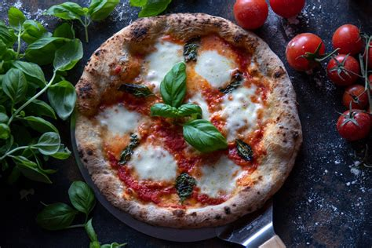
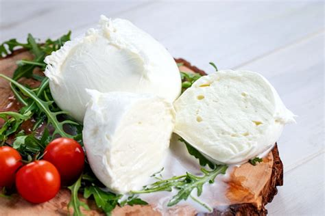
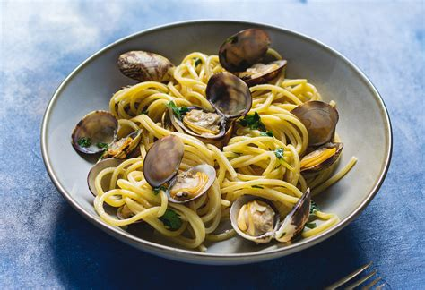
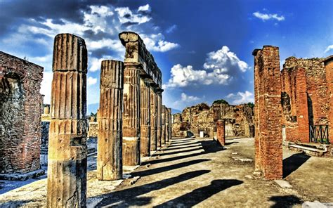
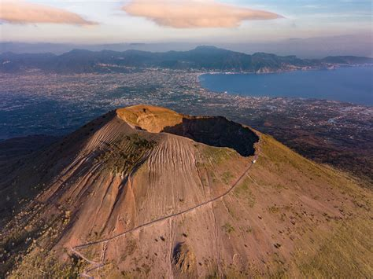
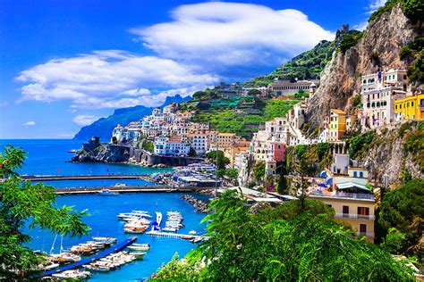
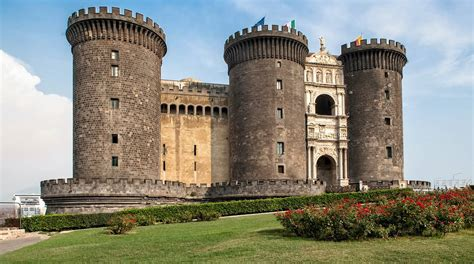
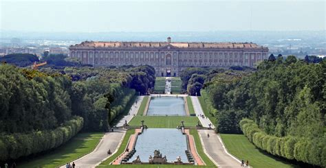
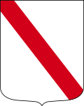

Campania
Panoramica
La Campania è una regione ricca di storia, cultura e bellezze naturali, situata nel sud-ovest dell’Italia. Conosciuta per il suo splendido litorale, il Vesuvio e siti archeologici come Pompei, la Campania offre una combinazione unica di mare, montagna e arte.
Fatti in Breve
- Capoluogo: Napoli
- Lingua: Italiano
- Popolazione: Circa 5,8 milioni
- Famosa per: Pizza, archeologia, coste mozzafiato
- Curiosità: Qui si trova la più famosa pizza al mondo, la pizza napoletana!
Piatti Tipici
Pizza Napoletana

Mozzarella di Bufala

Spaghetti alle Vongole

Pastiera Napoletana

Luoghi Famosi
Pompei

Vesuvio

Costiera Amalfitana

Napoli

Reggia di Caserta

Quando Visitare
La primavera e l’autunno sono perfetti per godere del clima mite e visitare i luoghi storici senza la folla estiva. L’estate è ideale per le spiagge e le coste, mentre l’inverno offre un’atmosfera più tranquilla.
Simboli Regionali
- Bandiera:
- Stemma: 